Project 5 / Face Detection with a Sliding Window
In this project, I implemented a face detection algorithm using the sliding window model. It is similar to the sliding window detector of Dalal and Triggs 2005, using SIFT-like Histogram of Gradients representation of features. There are roughly three parts to the detection pipeline of the algorithm: extracting features of positive and negative training data, training a classifier, and running the sliding window detector with the classifier. Details of each of these steps are discussed below.
Implementation
Feature Extraction
Features are represented with Histogram of Gradients computed via vl_hog in the vl_feat package. One important parameter here is the cell size of the histograms. I have tried to use 3 and 6 pixels for the cell size. Smaller size gives better performance as images are described in finer detail, but slows down the algorithm significantly.
Mining the features of the positive examples was pretty straightforward. Each input image had already been cropped to a fixed-size 36x36 template, so it was only a matter of running vl_hog and convert each HOG feature matrix into a vector.
for i = 1:num_images
img = single(imread(fullfile(train_path_pos, image_files(i).name)))/255;
features_pos(i,:) = reshape(vl_hog(img,cell_size),[1 dim]);
end
Mining the results for the negative example is a little involved. I divided an image into a series of 6x6 blockes represented as columns each column into a separate HOG feature. Then I downsized the image and repeated this process on the shrunk image, until the image was smaller than the size of the template. I repeated this process until I mined a specified number of examples and sample the required number of examples out of them.
for i = 1:num_images
img = single(imread(fullfile(non_face_scn_path, image_files(i).name)))/255;
if(size(img,3) > 1)
img = rgb2gray(img);
end
while (size(img,1) >= template_size && size(img,2) >= template_size)
windows = im2col(img, [template_size template_size], 'distinct');
for j = 1:size(windows,2)
window = reshape(windows(:,j),[template_size template_size]);
features_neg(end+1,:) = reshape(vl_hog(window,cell_size),[1 dim]);
end
img = imresize(img,0.6);
end
if (size(features_neg,1) > 3*num_samples)
break;
end
end
sample_index = randperm(size(features_neg,1),num_samples);
features_neg = features_neg(sample_index,:);
One can see that at this stage, the template coarsely resembles the shape of a human face (round contour, black eyebrows, bright in the center).
Classification
Classification of the training data uses a linear SVM with lambda 0.0001. Performance on training set is almost perfect, accuracy around 0.99.
X = [features_pos;features_neg];
Ypos = ones(size(features_pos,1),1);
Yneg = ones(size(features_neg,1),1) * -1;
Y = [Ypos;Yneg];
[w b] = vl_svmtrain(X', Y', 0.0001);
Sliding Window Detection
Detecting faces uses the sliding window approach. Each test image is scaled to different sizes, and then for every window of size 36 x 36 of the resized image, an HoG feature is computed and classified with the pre-computed classifier from the classification step. Finally, windows that score above a threshold 1 go through non-maximum suppression, producing the final results.
while (size(img,1) >= template_size && size(img,2) >= template_size)
hog = vl_hog(single(img), feature_params.hog_cell_size);
cell_rows = size(hog,1);
cell_cols = size(hog,2);
for r = 1:(cell_rows - cells_per_template)
rstart = r;
rend = rstart + cells_per_template - 1;
for c = 1:(cell_cols - cells_per_template)
cstart = c;
cend = cstart + cells_per_template - 1;
window = hog(rstart:rend, cstart:cend, :);
feature_vector = window(:);
confidence = dot(w,feature_vector) + b;
if(confidence > 1)
loc = floor([(cstart-1)*cell_size+1, (rstart-1)*cell_size+1, (cstart-1)*cell_size+template_size, (rstart-1)*cell_size+template_size] * 1/scale);
cur_confidences(end+1,:) = confidence;
cur_bboxes(end+1,:) = loc;
cur_image_ids(end+1,:) = {test_scenes(i).name};
end
end
end
img = imresize(img,0.9);
scale = scale * 0.9;
end
Results
An average precision of 0.874 is achieved. This shows that the linear classifier and the feature descriptor already does a reasonably good job at 6 pixel cell size.
Precision Recall curve for multiple scales implementation.
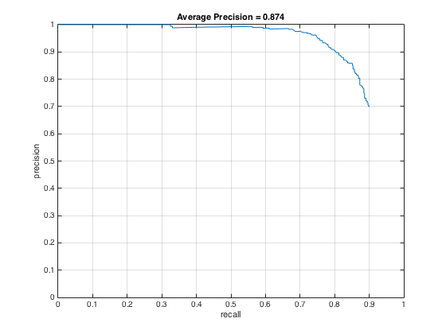
"ROC" curve (except horizontal axis is # of false positives) for multiple scales implementation
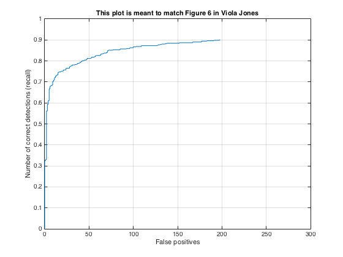
Here are two examples of running this implementation on test images.
 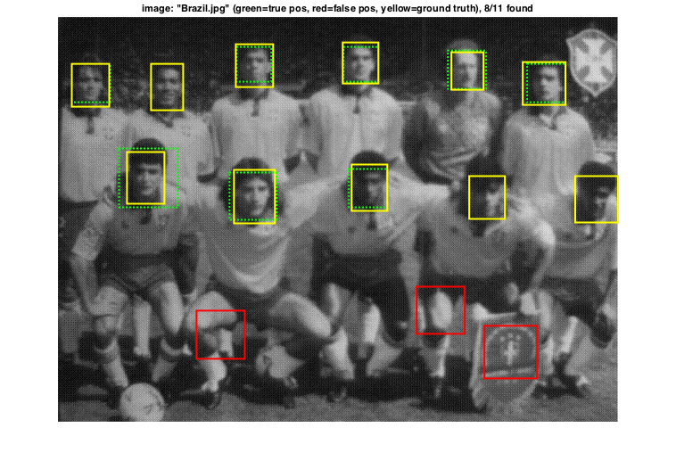
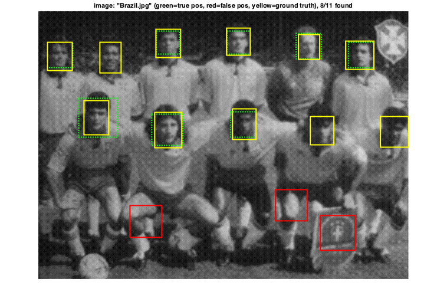
Better Performance with Smaller Cells
Decreasing cell size and increasing the number of negative samples makes the result even better. I achieved best performance (average precision 0.924) with cell size of 3. I believe this number can still increase with even higher number of negative samples and different step size, but the extra cost of run time may be too much compared to increased performance. Below are some visualizations of the results. Note that with cell size of 3, the HoG template has much finer details and one can see it is the shape of a human face.
Face template HoG visualization for best performance implementation.
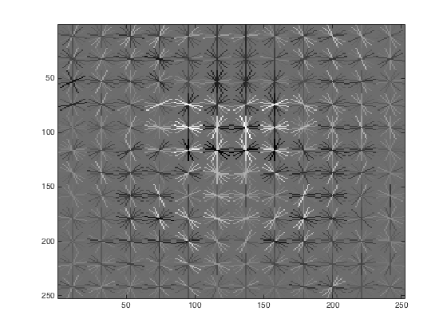
Precision Recall curve for best performance implementation.
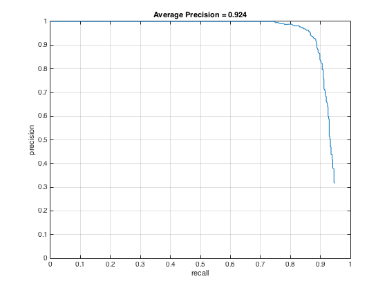
"ROC" curve for best performance implementation.
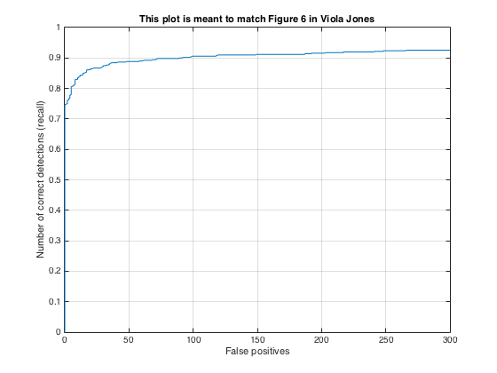
Some test images with detections:
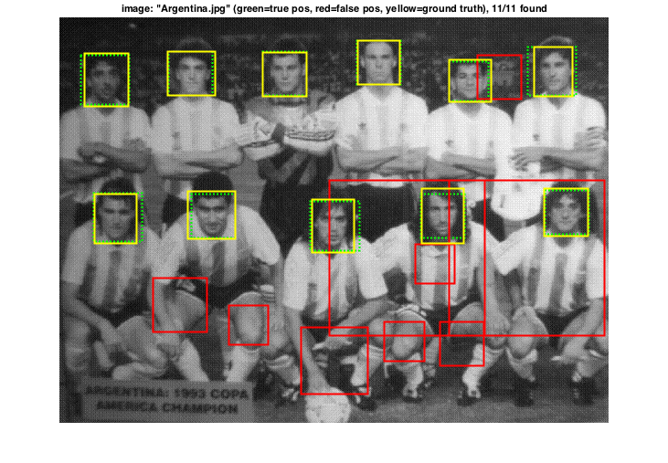 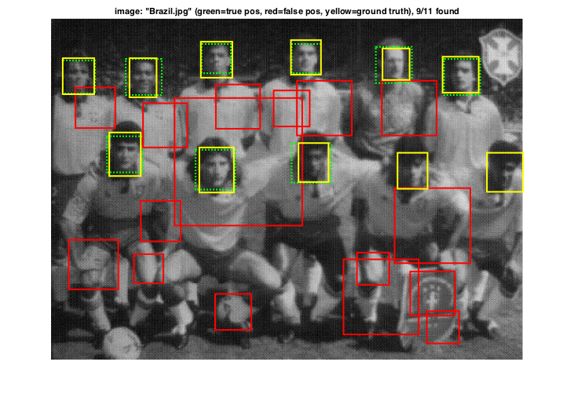
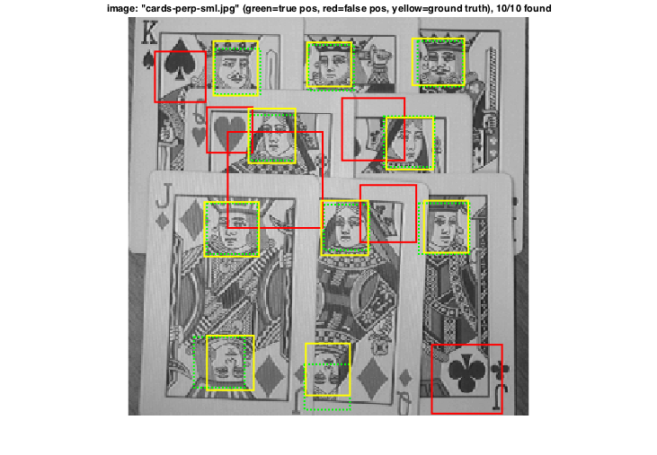 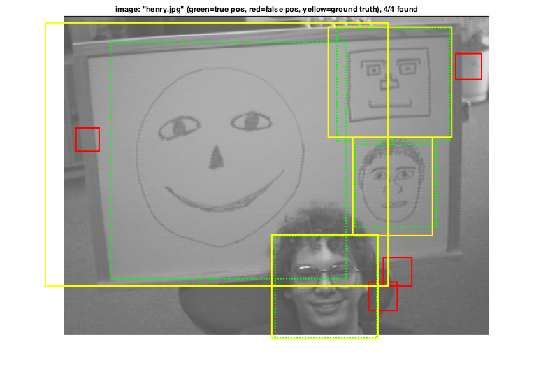
Extra Credits
Doing a little more tweaking, I added mirror version of positive example in the traning images. Now the number of positive example become 6,713x2 = 13,426. From the HoG template we can see that the flipped traing examples make the template more symmetric. However, the average precision has no apparent improvement.
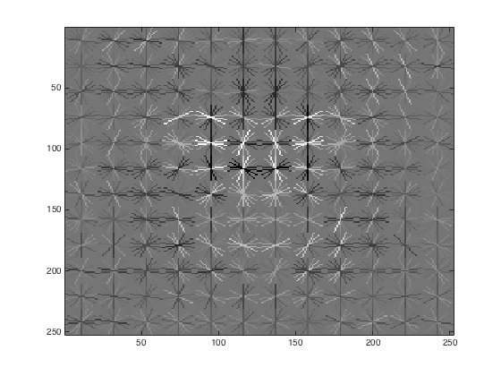 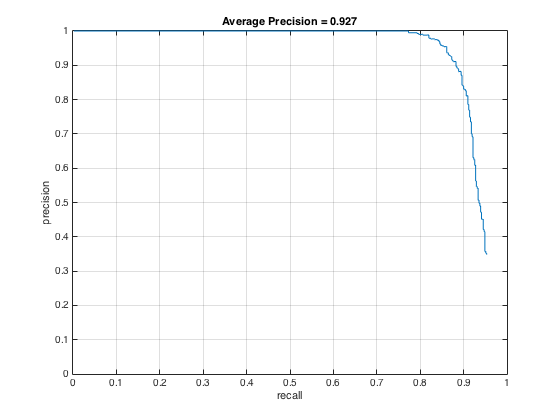
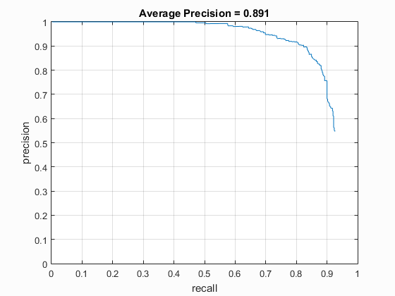 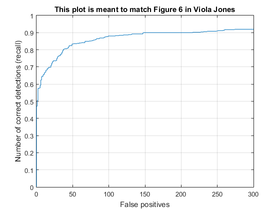